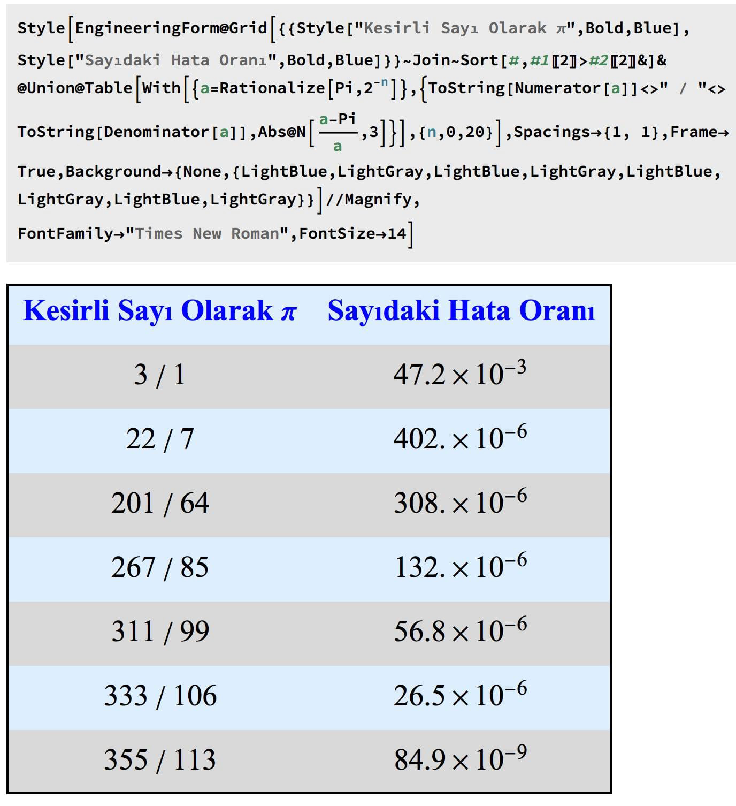

Eminim çoğumuz okul hayatının bir döneminde pi sayısının 22/7 olduğunu öğrenmiştir. Şanslıysa pi sayısının asla bu şekilde kesirli bir sayı olarak yazılamayacağını, 22/7 nin sadece güzel bir yakınsama olduğunu da öğrenmiştir
Üniversite’de dahi bir çok hesapta pi’nin 3 alındığına şahit olmuşsunuzdur, özellikle de göreceli olarak çok fazla sayısal olmayan alanlarda. Hatırlarım ODTÜ Fizik’te asistanlık yaparken biyolojicilerin falan girdiği birinci sınıf fizik derslerinin sınavlarında pi’yi 3 alınız yazdığı için diğer fizikçi arkadaşlarla gülmeden edemezdik
Peki gülmekte haklı mıydık? Pi’yi 3 almak ne kadar hatalı? Ya pi’yi 22/7 almak ne kadar hatalı? Eğer daha az hatalı bir hesap yapıyorsak 22/7’ye benzer pi’nin kesirli başka gösterimleri var mı?
İlk soruya nesnel bir cevap vermek zor ama kalanlara nesnel bir cevap verebiliriz Pi’yi 3 almak 1000’de 47’lik bir hata yapmaya karşılık geliyor, Pi’yi 22/7 almaksa milyonda 402’lik bir hataya. Yani Pi’yi 22/7 aldıysanız, binde birden daha az hata yapıyorsunuz demektir.
Benzer şekilde kesirli sayılar oluşturulabilir, ben oluşturulabilecek kesirli sayılardan en basitlerinden bir liste yaptım, ekteki resimde görebilirsiniz. Özellikle 355/113 sayısı çarpıcı: Pi yerine bu sayısı kulladığımızda yaptığımız hata 10 milyonda birden az!
Ekteki tabloyu Mathematica ile oluşturdum, kodu da paylaştım, kendiniz
evde deneyebilirsiniz İnanmayanlar 355/113’ü de evde hesap makinalarından
kontrol edebilir
